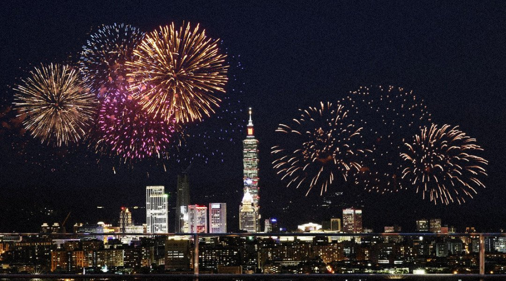
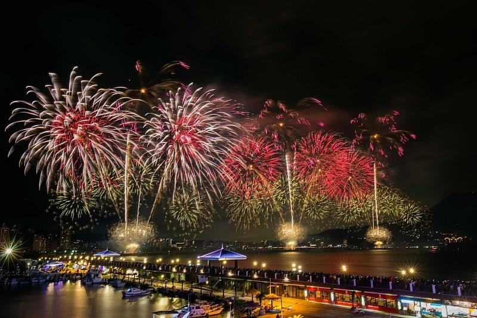
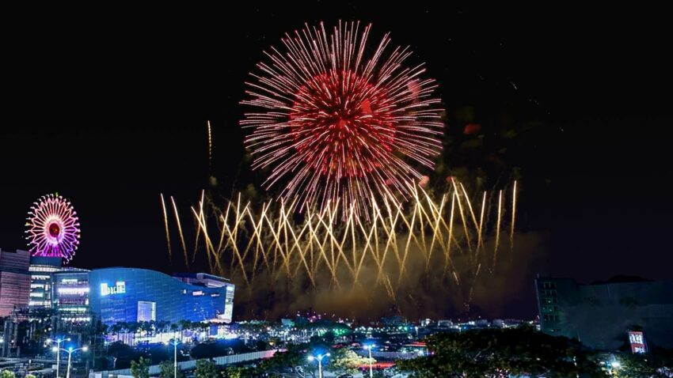

|
2025跨年去哪裡
 圖：https://blog.myfunnow.com/blog/751?title=taipei-nye |
|
|
台北101
台北最High新年城，跨年晚會活動將在2024年12月31日晚間至2025年 1月1日台北市民廣場舉行，今年演唱會邀請到韓國女團 Apink、超人氣男團 Energy、金曲歌后戴佩妮、天團八三夭等重量級卡司，將搭配101煙火，陪伴大家跨到2025年。 |
|
|

https://www.cna.com.tw/postwrite/chi/360883 |
新北市-淡水八里
新北市政府舉辦的「閃耀新北 1314跨河煙火」將於12月31日下午15:00起，在淡水漁人碼頭、海關碼頭、八里左岸熱鬧登場。今年煙火總發數超過3萬發，為歷年最多，時長13分14秒，將在12/31 晚上20:25施放，以黃、藍、綠、紅四大色系展開煙火四大篇章，並搭配專屬創作音樂。煙火秀結束後，還有重量卡司SUPER JUNIOR的小分隊L.S.S.獨家壓軸開唱 |
|
台中市-水湳中央公園
台中市政府舉辦的「2025台中跨年晚會」將在2024年12月31日水湳中央公園登場，晚上18:00起暖場表演，19:00演唱會正式開始，將一路嗨唱到凌晨1:00。超過18組超強卡司接力登台飆唱，用好音樂陪伴大家迎向2025嶄新一刻。 |
https://taiwan.sharelife.tw/article_aid-11108.html |
|

https://reurl.cc/Kd8zkq |
高雄市-夢時代
高雄市將在2024年12月31日晚上18:55至2025年1月1日夢時代舉辦跨年晚會活動，於凌晨施放 250 秒亞灣跨年跨年花火，並搭配 Bruno Mars 歌曲《Just the Way You Are》演出，卡司表演歌手持續公布中。 |
|
觀三A/411139337/趙允榛 製作
資料取自：https://reurl.cc/L5ax14 | |